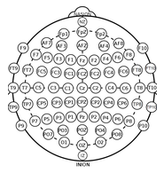

What captures attention?
How quickly does emotionally meaningful information engage attention? We examine emotional reactivity and attentional bias: whether some kinds of information receive priority over others.
AffectNeuroLab · Dr. Hiran Shanake Perera
AffectNeuroLab is the personal research website of Dr. Hiran Shanake Perera, with a focus on affective neuropsychopathology.
We investigate how the brain processes and recovers from emotional experiences, and whether disruptions in these processes contribute to psychological disorders such as depression and anxiety.
Our work integrates cognitive neuroscience, experimental psychology and psychophysiology to examine emotional dynamics in real time.
Explore our research questions
Principal investigator
AffectNeuroLab
Affective and cognitive neuroscience
Google Scholar & ResearchGate
Profile name: hiranshanakeperera
Our research focus
An emotional response has a beginning, a period of engagement and a course of recovery. We ask how these processes differ between individuals, and how they relate to attention, cognitive control and psychological difficulties.
How quickly does emotionally meaningful information engage attention? We examine emotional reactivity and attentional bias: whether some kinds of information receive priority over others.
What happens after a response begins? We ask how long attention remains with emotional information, how difficult it is to disengage, and how cognitive control shapes this persistence.
How does a response change after an emotional event has passed? We study recovery as a process in its own right, asking whether prolonged responses help explain vulnerability to depression and anxiety.
These are research questions rather than established conclusions about any individual or disorder. A central aim is to distinguish a strong initial response from a response that is slow to resolve.
EEG & event-related potentials

EEG records small differences in electrical potential through electrodes on the scalp. Its fine temporal resolution allows researchers to investigate changes on the scale of milliseconds, helping distinguish early responses from later processing.
ERPs are obtained by aligning EEG to events, such as the appearance of a picture or a participant’s response, and typically averaging across repeated trials. They help us examine when aspects of processing occur.
For AffectNeuroLab, neural timing offers a way to ask whether emotional information changes initial attention, sustained engagement or later recovery. Behavioural experiments, eye tracking and self-report provide complementary perspectives on these questions.
Interpretation depends on the task, the quality of the recording and the analysis. EEG is sensitive to eye movements and muscle activity, and scalp signals do not uniquely identify their sources inside the brain. A waveform alone does not explain a person’s emotional experience.
Background reading: EEG and the timing of visual processing; the origins of electrical brain signals.
Research & learning
For enquiries about AffectNeuroLab’s research, postgraduate supervision or potential collaboration, contact Dr. Hiran Shanake Perera with a brief description of your interests.
Specific opportunities depend on current availability.
Email Dr. Hiran Shanake Perera